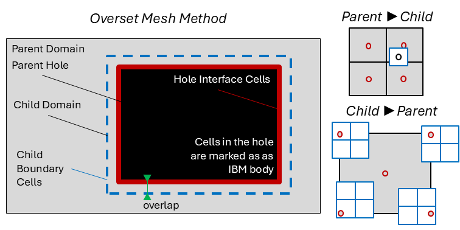

Overset Algorithm
Overset mesh (also known as grid nesting) allows to introduce refinement levels within TOSCA. In this technique, a finer mesh is immersed inside the original background mesh. Boundary conditions for the finer mesh are interpolated from the background mesh, while cells in the background mesh are blanked when they overlap with the finer mesh. This “hole” in the background mesh is treated as an IBM body (see Immersed Boundary Method), where the solution at the IBM fluid cells is interpolated from the finer mesh. In order to understand how the overset mesh method works in TOSCA, it is worth mentioning some nomenclature used in relation to the following figure:
{kind=link}

A parent domain is a domain that fully contains another domain, usually characterized by a finer mesh, referred to as the child domain. Since the parent encloses the child, a hole can be created, a few cells inwardly offset from the child, where parent domain cells are not solved. This is referred to as the parent hole, which is treated as an IBM body. Hole interface cells are IBM fluid cells where the solution is interpolated from the child domain. Vice versa, the solution is interpolated from the parent domain at the child boundary cells. The offset between the hole and the child domain is required in order to use centered interpolation stencils when interpolating from the parent to the child domain. Finally, donor and acceptor cells are those cells that provide and receive the interpolaton data, respectively. Parent and child domains have both donor and acceptor cells, depending if the interpolation is from parent to child or vice versa. Regarding the interpolation, when this goes from parent to child (coarse to fine), a tri-linear scheme is used. Conversely, when going from child to parent (fine to coarse), a tri-linear scheme would make the interpolated value too local if the parent to child grid ratio is too large. For this reason, TOSCA introduces a tri-linear averaged interpolation, where cell corners are first tri-linearly interpolated and then averaged to yield the cell value, as shown in the figure above.
Within TOSCA’s overset method, there are two types of interpolation between the parent and the child domains:
P2C (Parent → Child): the child mesh boundary cells receive velocity, temperature, and pressure values interpolated from the parent mesh.
C2P (Child → Parent): the parent hole-interface mesh cells receive values interpolated from the child mesh.
The hole in the parent mesh is treated as an IBM body (see Immersed Boundary Method). Cells inside the hole are blanked and not solved; the IBM fluid cells at the hole boundary are the C2P acceptors.
The PETSc-SF (Star Forest) implementation is used to encode the sparse donor-to-acceptor topology once at initialization, and uses
PetscSFBcastBegin/End for efficient one-collective-per-step data scatter at run time.
Note
The implementation does not handle intersecting domains at the same level. Domains must be either telescopic (one fully contained in the other) or non-overlapping at the same level. A buffer of at least 3 parent-mesh cells must separate the hole boundary from the child domain boundary.
Acceptor Cell Types
Each rank maintains two lists of acceptor cells — cells that receive interpolated data — stored in the overset_ struct:
localAcceptorsDbDomain Boundary acceptors (P2C). These are the outermost layer of cells of the child mesh (index 0 or
mx-1,my-1,mz-1). Each entry is a singleAcellwith the cell’s (i,j,k) indices and its physical centre coordinates. One entry per cell.localAcceptorsHc[donorId]Hole-Cut acceptors (C2P), stored in a
std::mapkeyed by the child mesh identifierdonorId. Because the C2P interpolation uses a tri-linear averaged scheme (parent cell value = average of 8 corner interpolations), each parent interface cell contributes 8Acellentries — one per cell corner — all sharing the sameparentCellId. The corner coordinates are the physical positions of the 8 vertices bounding the cell.
The Acell structure:
typedef struct {
PetscInt indi, indj, indk; // cell (i,j,k) indices in the acceptor mesh
PetscReal coorx, coory, coorz;// physical coords used as the query point
PetscMPIInt rank; // MPI rank that owns this acceptor
PetscReal cell_size; // currently unused in PETScSF
PetscInt face; // currently unused in PETScSF
PetscInt donorId; // donor mesh identifier
PetscInt parentCellId; // groups 8 vertices of same C2P parent cell
} Acell;
Initialization
BuildOversetSF contains the main initialization part of the overset, and it is a static function,
called once per donor/acceptor mesh pair during initialization.
It takes the local acceptor list and returns a PetscSF graph and the root-slot metadata needed at every
interpolation step. The algorithm proceeds in six stages.
Stage 1 — Octree construction
Each donor rank builds a local octree (OctreeNode) over its interior cell centroids, bounded by the rank’s
physical domain expanded by one cell width on each side so that neighbouring ranks’ acceptors fall within the tree.
The octree uses a maximum depth of 15 and a maximum of 1000 cells per leaf node.
This reduces per-query search cost to O(log N).
Stage 2 — Bounding-box exchange
Each rank broadcasts its expanded bounding box (OversetBbox) to all other ranks via MPI_Allgather.
As a result, every acceptor rank knows the physical extent of every donor rank.
Stage 3 — Query packing and send-count computation
For each local acceptor at position (x, y, z), the code tests every donor rank’s bounding box with bboxContains().
Candidate ranks are those whose bounding box contains the acceptor position (note that a zero tolerance is used).
A sCount[d] counter is incremented for each candidate rank d, and the corresponding OversetQuery
packet {originIdx, x, y, z} is packed into a flat sendQ buffer grouped by destination rank.
sDispl[d] is the prefix-sum offset into sendQ for rank d’s queries.
struct OversetQuery {
PetscInt originIdx; // index into localAcceptors on the acceptor rank
PetscReal x, y, z; // physical position of the acceptor cell / vertex
};
Stage 4 — All-to-all query exchange
MPI_Alltoall exchanges the per-rank query counts so every rank knows how many queries it will receive.
MPI_Alltoallv with a custom MPI struct type qtype then delivers the actual query packets. Each donor
rank now holds a recvQ[totalRecv] buffer with all queries destined for it.
Stage 5 — Octree search and all-to-all reply exchange
For each received query the donor rank calls searchOctree() to find the nearest cell centroid.
If a match is found, a root slot is allocated (slotCounter++) and the donor cell indices are appended
to the output arrays rootI/rootJ/rootK and the acceptor query coordinates to rootX/rootY/rootZ.
The slot index and Euclidean distance are packed into an OversetReply packet:
struct OversetReply {
PetscInt originIdx; // which acceptor this reply belongs to
PetscInt slotIdx; // root slot on this donor rank (-1 if no match)
PetscReal dist; // Euclidean dist. from acceptor to nearest donor centroid
};
A second MPI_Alltoallv with type rtype returns the replies to the original acceptor ranks
(send/recv count arrays are swapped for the return trip).
Stage 6 — Best-donor selection and PetscSF graph construction
Each acceptor rank scans all returned replies for each acceptor and picks the minimum-distance donor.
The winning donor’s {rank, slotIdx} pair becomes the iremote entry for that acceptor leaf.
The star-forest graph is then built using:
PetscSFCreate(comm, &sf);
PetscSFSetGraph(sf,
nRoots, // donor slots owned by this rank
nLeaves, // local acceptors that found a donor
ilocal, // leaf index = position in localAcceptors[]
PETSC_COPY_VALUES,
iremote, // {rank, slotIdx} of the remote donor root
PETSC_COPY_VALUES);
PetscSFSetUp(sf);
Per-Step Interpolation
Interpolation is performed by interpolateACellTrilinearP2C (P2C) and interpolateACellTrilinearC2P (C2P)
at every time step. Both functions follow the same pattern:
Root packing (donor side). For each root slot
s, the donor rank reads the cached acceptor position fromrootSlotCoords[3*s : 3*s+3]and the donor cell index fromrootSlotIdx[3*s : 3*s+3], then performs trilinear interpolation (vectorPointLocalVolumeInterpolation/scalarPointLocalVolumeInterpolation) to produce five values: Ux, Uy, Uz, T (if active), p. These are packed intorootBufwith stride 5.PetscSF broadcast. A contiguous 5-double MPI datatype
t5is registered andPetscSFBcastBegin/EndscattersrootBuffrom roots toleafBufon acceptor ranks in a single non-blocking collective.MPI_REPLACEis used as the reduction operation.Leaf scatter (acceptor side).
P2C: each leaf maps directly to one
AcellinlocalAcceptorsDb. The five received values are written toucatA[k][j][i],tempA[k][j][i],pressA[k][j][i].C2P: acceptors are grouped by
parentCellId(8 leaves per parent cell). The eight received velocity, temperature, and pressure values are averaged to obtain the single cell-centre value written to the parent mesh arrays.
Key Variables
The overset_ struct (defined in include/overset.h) holds all persistent state for a domain’s
overset coupling. The PetscSF-path members are listed below.
P2C (parent → child, domain boundary)
Member |
Description |
|---|---|
|
|
|
|
|
|
|
|
|
|
|
|
C2P (child → parent, hole-cut boundary)
All C2P members are std::map<PetscInt, ...> keyed by the child mesh identifier donorId,
allowing a single parent domain to couple with multiple child domains simultaneously.
Member |
Description |
|---|---|
|
|
|
|
|
|
|
|
|
|
|
|
Function Summary
Function |
Description |
|---|---|
|
Top-level entry point. Calls |
|
Recursive. Populates |
|
Recursive. Calls |
|
Static helper. Implements the 6-stage donor search and PetscSF construction described above. Called once per donor/acceptor mesh pair. |
|
Wrapper that calls |
|
Wrapper that calls |
|
Per-step P2C interpolation. Packs |
|
Per-step C2P interpolation. Packs |
|
Called every time step. Iterates over top-level domains and calls |
|
Recursive per-domain update: (1) P2C from all parents, (2) standard BCs, (3) C2P from all children, then recurse into children. |
|
Shifts pressure fields across all domains so that the gauge is consistent: root domain is shifted to |
|
Enforces zero contravariant flux at blanked (IBM-solid) faces and sets interpolated face fluxes from the updated Cartesian velocity in the parent mesh after C2P. |
|
Recursive octree construction over donor cell centroids. Leaf condition: |
|
Recursive nearest-neighbour search in the octree. Returns a |